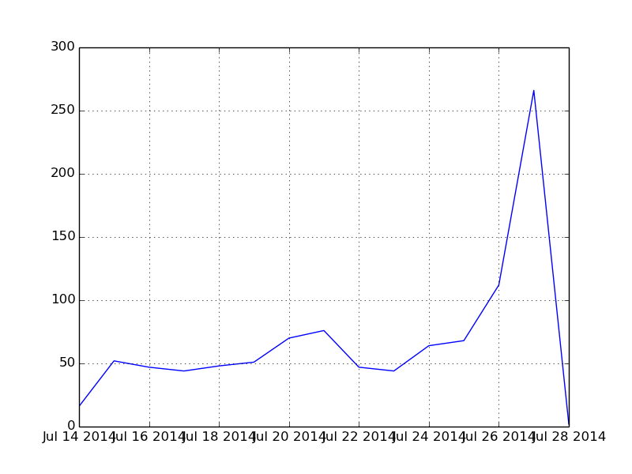

JMOOC講座「オープンエデュケーションと未来の学び」のWeek2の課題「オープンエデュケーションのサービスやキーワードをまとめよう！」のとして その結果概要を報告します。 この結果は後日追加、修正されることがあります。
受講者約7000人のうち、1007件のレポート提出がありました。提出数の推移は以下の図の通りです。

サービスのタイトルを提出時のまま集計しました。 同じサービスでも表現（つづりのミスを含む）が違うと別々にカウントされています。
| manavee | 138 |
| ドットインストール | 60 |
| 放送大学 | 55 |
| schoo | 44 |
| PhET | 40 |
| TED | 33 |
| Curriki | 31 |
| OUJ MOOC | 29 |
| 生涯学習 | 26 |
| eラーニング | 26 |
| iTunes U | 22 |
| UTokyo OCW | 21 |
| eboard | 21 |
| TED-Ed | 21 |
| 受験サプリ | 21 |
| 東大TV | 20 |
| 反転授業 | 19 |
| ソーシャルラーニング | 19 |
| Udemy | 19 |
| 機会促進(Opportunity) | 18 |
| ブレンド型学習 | 18 |
| TIES | 18 |
| 互恵性 | 18 |
| gacco | 17 |
| 放送大学オープンコースウェア | 17 |
| 互恵性(Reciprocity) | 17 |
| Moodle | 17 |
| 機会促進 | 16 |
| スクー | 16 |
| アクティブラーニング | 16 |
参照・引用元のURLをドメイン別に集計しました。
| manavee.com | 186 |
| ja.wikipedia.org | 168 |
| schoo.jp | 157 |
| www.mext.go.jp | 73 |
| dotinstall.com | 68 |
| www.ouj.ac.jp | 68 |
| www.nhk.or.jp | 66 |
| shige.jamsquare.org | 60 |
| curriki.jp | 56 |
| www.ted.com | 56 |
| www.jocw.jp | 53 |
| www.facebook.com | 51 |
| todai.tv | 49 |
| ocw.u-tokyo.ac.jp | 48 |
| phet.colorado.edu | 47 |
| openstudy.com | 40 |
| share-wis.com | 37 |
| www.youtube.com | 37 |
| creativecommons.jp | 36 |
| www.eboard.jp | 35 |
| www.slideshare.net | 33 |
| ed.ted.com | 33 |
| fukutake.iii.u-tokyo.ac.jp | 32 |
| www.apple.com | 32 |
| www.coursera.org | 32 |
| weblearningplaza.jst.go.jp | 31 |
| edmaps.co | 31 |
| gacco.org | 30 |
| ocw.ouj.ac.jp | 29 |
| e-words.jp | 29 |
よく使われた単語を集計しました。
| 学習 | 3036 |
| 教育 | 2567 |
| 大学 | 2013 |
| 提供 | 1370 |
| 授業 | 1317 |
| 無料 | 1169 |
| 教材 | 1088 |
| 公開 | 1067 |
| 講義 | 1035 |
| サービス | 888 |
| オープン | 874 |
| 利用 | 852 |
| サイト | 846 |
| インターネット | 830 |
| オンライン | 796 |
| 動画 | 786 |
| 講座 | 782 |
| 日本 | 649 |
| 情報 | 622 |
| 受講 | 574 |
| 可能 | 545 |
| 社会 | 501 |
| 学生 | 491 |
| コンテンツ | 464 |
| コース | 458 |
| 開発 | 444 |
| 技術 | 434 |
| 配信 | 427 |
| 世界 | 427 |
| システム | 418 |